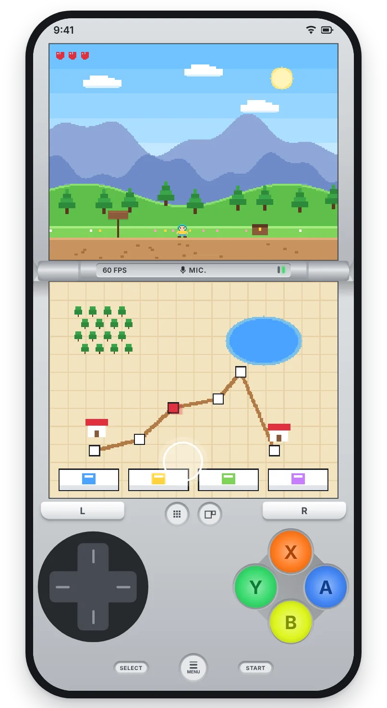
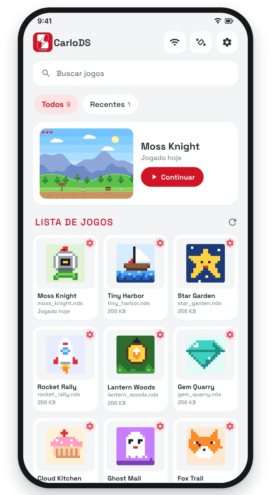
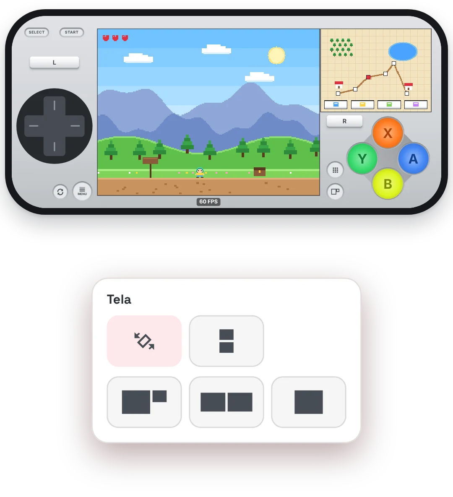
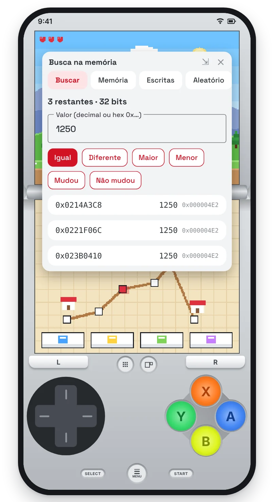

Recursos
CarloDS é um emulador de NDS para smartphones e tablets Android. Seu núcleo de emulação – processadores ARM9 e ARM7, gráficos 2D e 3D, áudio, conexão sem fio e BIOS integrada – foi inicialmente baseado no projeto de código aberto SkyEmu (licença MIT), depois amplamente reescrito e expandido, e calibrado com base em diversos testes no console original. A maioria dos jogos funciona sem arquivos de BIOS; o formato ZIP é compatível.
Núcleo de alta precisão
- Calibração com base em testes de hardware: temporização da CPU, DMA, renderização 3D, antisserrilhamento, recorte e outros
- Dois núcleosO preciso, o mais fiel ao hardware original, e o rápido com JIT, consideravelmente mais veloz
- BIOS integrada; arquivos de BIOS e firmware próprios na pasta de jogos são utilizados automaticamente

Biblioteca de jogos
- Leitura automática de ícones e títulos; compatível com subpastas e arquivos ZIP
- Busca, jogos recentes e acesso rápido "Continuar"
- Capa personalizável para cada jogo
- Teste de desempenho opcional na primeira execução, com recomendação das configurações ideais

Layout das telas e controles
- Retrato, paisagem grande + pequena, paisagem lado a lado e paisagem em tela única, com um toque e troca de telas
- Controle por toque na tela inferior
- Orientação da tela à escolha
- Botões na tela podem ser ocultados para uso com controle
- Fechamento e abertura da tampa (a maioria dos jogos entra em repouso)

Gráficos e desempenho
- Predefinições básica, intermediária e avançada, além de uma predefinição recomendada após o teste de desempenho
- 3D com até 4× a resolução (ou automático), antisserrilhamento 3D, suavização de texturas e ampliação 2D suave
- RenderizaçãoSoftware, OpenGL ES e Vulkan
- FiltrosSuavização, LCD, linhas de varredura, xBR e nitidez CAS; brilho e contraste ajustáveis
- Opções de desempenhoSaída de 16 bits, 3D multithread, geometria instantânea, pulo de quadros automático
- Configurações de imagem, desempenho e controle por jogo
- Informações na telaAnimação de abertura, quadros por segundo e estatísticas detalhadas

Saves e ferramentas
- Vários espaços de estado com opção de desfazer; salvamento automático em caso de interrupção
- Avanço rápido (até 4×), retrocesso (5, 10 ou 15 segundos por toque) e turbo com velocidade ajustável
- Atalhos no jogoVolume, salvamento rápido, captura de tela, tampa, trapaças, busca na memória e retrocesso
- TrapaçasCódigos Action Replay, bancos usrcheat.dat e cheats.xml, e arquivos .mch, .dct, .cht e de texto
- Busca na memória em janela flutuante sem interromper o jogo, com visualizador de memória e registro de gravações

Jogo sem fio e conteúdo para download
- Jogo sem fio local entre dispositivos na mesma rede Wi‑Fi ou por meio de um ponto de acesso móvel
- Substituto integrado do serviço online descontinuado, hospedado no dispositivo para a rede local (jogos selecionados)
- Conteúdo para download (experimental)Presentes e distribuições integrados, disponíveis offline

Recursos adicionais
- Compatível com RetroAchievements
- Saves na nuvem via Google Drive
- Controles e teclados com todos os botões remapeáveis
- Microfone para jogos que exigem soprar ou falar; gravação apenas durante o jogo
- Slot de GBAJogo de GBA do RetroGenY, nosso emulador de GBA, ou Rumble Pak usando a vibração do dispositivo
- Perfil do consoleApelido, aniversário, cor favorita, mensagem e idioma
- Relato de problemasEnvio de registros ao desenvolvedor por e-mail